Sua TV, simples de novo. Tudo no lugar, como numa sala arrumada.
Feita para quem só quer deitar no sofá e ver TV. A Sofaly troca a tela inicial, não a sua TV: o Google continua lá, nada de propaganda, e cada coisa fica num lugar só.
Uma cruz, cinco mundos
Continuar, Assistir, Ouvir, Jogar e Aplicativos. Dois cliques para qualquer coisa.
Nenhuma propaganda
Nem no plano grátis, nem um destaque patrocinado. Nada de rastreio saindo da sua casa.
Rápida em TV simples
Medida num Chromecast de 32 bits: a animação se ajusta ao que o aparelho aguenta.
Feita para a casa inteira
Para os avós também
Letra grande, modo simples que fala o nome do app, alto contraste e leitor de tela. Em 15 línguas.
Acorda com você
O despertador liga a TV sozinho, sobe o volume devagar e abre o Bom dia: hora, clima e agenda.
Cuida da casa
Luzes, cenas e a campainha do Home Assistant na TV. Desliga sozinha quando todos saem.
Fala com o celular
Controle, digite e mande recados pelo celular ou computador da casa, protegidos por PIN.
Clima de verdade
O tempo de agora vem do aeroporto mais perto: medido, não chutado. Previsão de 9 dias com um OK.
Se cuida sozinha
Backup trancado toda noite, manutenção de madrugada e um diagnóstico que explica o que deu errado.
A TV também no seu celular e no computador.
Abra o navegador na mesma rede, digite o PIN e pronto: controle, digitação com acento, a tela da TV ao vivo, recados e ajustes. Sem instalar nada e sem conta.
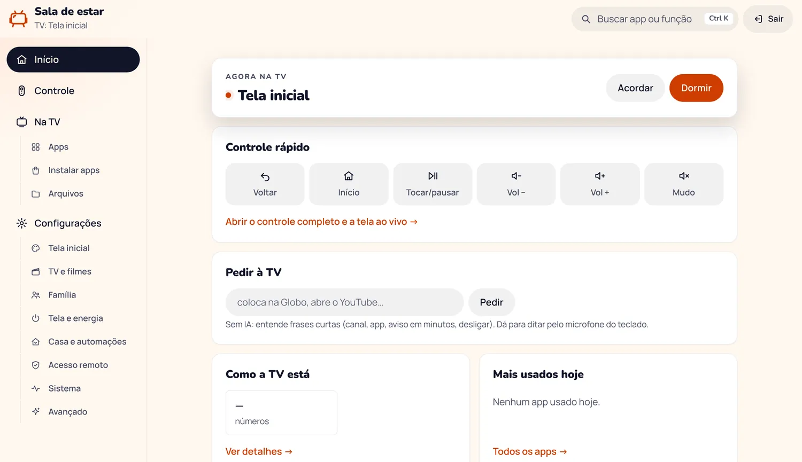
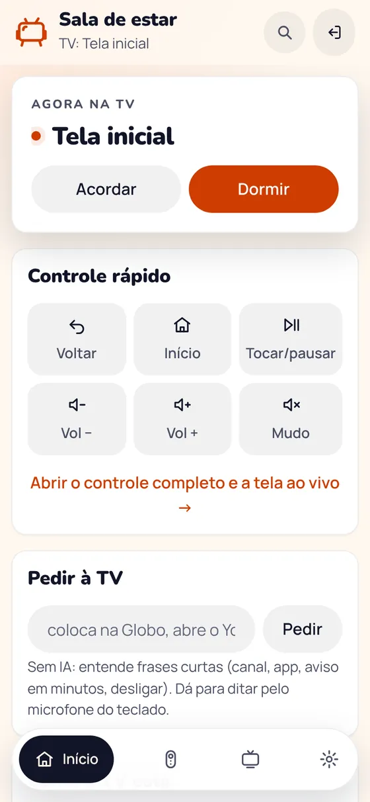
- Painel no celular e no computadorControle remoto, digitar com acento, ver a tela da TV, fotos do protetor, mural e backups, pelo navegador de qualquer aparelho da casa.
- Pedir à TVEscreva ou dite “abre o YouTube”, “avisa em 7 minutos”, “desliga em 30 minutos” e a TV faz.
- Compartilhar do celularInstalado como app, o painel aparece em Compartilhar: um vídeo do YouTube abre na TV, um link abre na TV e um texto vira recado.
- Atalho no WindowsA TV aparece na Rede do Explorador com um atalho que abre o painel, mesmo se o IP mudar.
- A TV como unidade de redeCopie arquivos para a TV arrastando: no Windows ela aparece em Este Computador como um celular; no Mac, no Linux e no celular, por WebDAV seguro.
- Várias casasCuide da TV da sua casa e da casa dos seus pais pelo mesmo celular.
Telas do painel de verdade, com dados de exemplo.
122 coisas que a sua TV passa a fazer. Organizadas em 12 mundos, do jeito que a cruz organiza a tela.
- A tela em cruzUma tela organizada que qualquer um entende, e que se ajeita do seu jeito.19
- AssistirSeus filmes, suas séries e um player de sala de cinema.14
- OuvirRádio e podcast com o mesmo cuidado que vídeo.5
- JogarTodos os jogos num lugar só, prontos para o controle.6
- AplicativosSeus apps na ordem que faz sentido.3
- A casaDespertador, timers, automações e a casa conectada.13
- Clima e protetorO tempo certo e um protetor de tela que vale a pena deixar ligado.15
- FamíliaUm perfil para cada um, cuidado com as crianças e visita bem-vinda.12
- Celular e computadorA TV conversa com os aparelhos da casa.11
- Se cuida sozinhaBackup, manutenção e diagnóstico sem você lembrar.13
- Para todo mundoFeita para quem enxerga, ouve ou anda com o controle de jeitos diferentes.5
- PrivacidadeSem propaganda, sem rastreio, com PIN no que importa.6
A tela em cruz
Uma tela organizada que qualquer um entende, e que se ajeita do seu jeito.
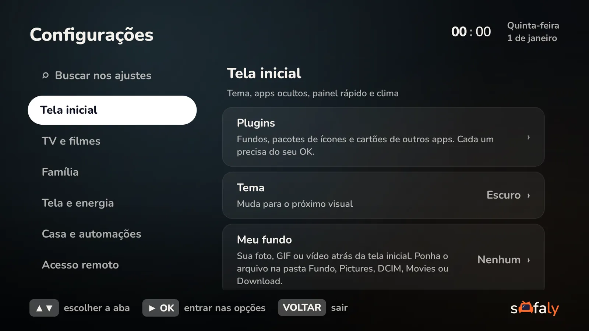
A cruz
Continuar, Assistir, Ouvir, Jogar e Aplicativos numa linha. O mundo escolhido fica grande, com o que tem dentro logo abaixo.
Continuar
Um lugar só para voltar ao que você estava fazendo: o episódio, a rádio, o podcast ou o último app.
Barra do topo
Busca, voz, o clima numa linha e a hora, sempre no mesmo lugar. Ela se recolhe enquanto você navega para a tela respirar.
A cruz
Continuar, Assistir, Ouvir, Jogar e Aplicativos numa linha. O mundo escolhido fica grande, com o que tem dentro logo abaixo.
Onde: ◀ ▶ trocam de mundo, ▲ ▼ descem pela coluna, OK abre.Continuar
Um lugar só para voltar ao que você estava fazendo: o episódio, a rádio, o podcast ou o último app.
Onde: É o primeiro item da cruz.Barra do topo
Busca, voz, o clima numa linha e a hora, sempre no mesmo lugar. Ela se recolhe enquanto você navega para a tela respirar.
Onde: Suba até ela com ▲.O Google continua funcionando
O Google Assistente, o Gemini, a busca e a sua conta Google funcionam como antes. A Sofaly troca a tela inicial, não a sua TV.
Onde: Use o botão do microfone como sempre.Painel rápido
Wi-Fi, Bluetooth, timer para desligar, saída de som, alarme, perfis, notificações e a lista de compras, de qualquer app.
Onde: Segure VOLTAR.O controle do seu jeito
HOME sempre volta para a Sofaly. Segurar VOLTAR abre o painel rápido, segurar HOME abre a Casa, e segurar OK num app abre o menu dele.
Onde: Um testador de teclas mostra cada botão que a TV recebe.Tocando agora
Uma pílula no topo com a capa e o título do que está tocando. OK pausa ou continua, segurar OK abre o app.
Onde: Ligue em Tela inicial › Mais opções.Temas e fundos
Escuro, com a arte do que está em foco. Galeria, com um quadro do Met por dia. Céu, com satélite e mapa. Ou um fundo seu, foto ou vídeo. Aceita também fundos de plugin, como as imagens aéreas do Overflight.
Onde: Escuro, Galeria e Céu no Básico; os outros no Pro.Ícones do seu gostoPro
Use um pacote de ícones da Play ou troque o ícone de um app só, um a um.
Onde: Segure OK no app › Trocar ícone.Animação do tamanho da sua TV
TV forte anima tudo; TV mais simples anima só o que você escolheu e diminui sozinha quando os quadros caem.
Onde: Configurações › Aparência.Fase da luaPro
A lua de hoje e quanto dela está iluminada, calculada na própria TV, sem internet.
Onde: Na Previsão, no protetor de tela e no ícone do clima à noite. Configurações › Aparência.Contagem regressivaPro
Quantos dias faltam para a data que você escolher, ou para o próximo feriado.
Onde: Na pílula do alto da tela. Configurações › Aparência.Lembrete da casaPro
Um aviso que volta nos dias da semana que você marcar: dia do lixo reciclável, remédio, aula.
Onde: Na pílula do alto da tela. Configurações › Aparência.Status do seu serviçoPro
A TV testa um endereço que você indicar e mostra se ele está no ar: o servidor de casa, o site da loja.
Onde: Na pílula do alto da tela. Configurações › Aparência.Cotação do diaPro
Moedas, bitcoin e ether com o valor do dia, de fontes oficiais abertas.
Onde: Ao lado do clima, na barra de cima. Configurações › Aparência.Próximo jogo do seu timePro
Quando e contra quem o seu time joga de novo, num cartão na tela inicial.
Onde: No item TV da cruz. Configurações › Aparência.Cartões de outros appsPro
Além dos cartões da Sofaly, apps parceiros põem o deles na tela inicial: o pedido do delivery, o ônibus, o aviso do condomínio.
Onde: Os cartões aparecem no fim do Assistir.A Ilha no alto da tela
Os avisos se revezam numa pílula no topo: sem internet, lembrete, agenda e despertador. O que é importante cresce por 5 segundos com “▲ para abrir”, a campainha da Casa aparece na hora e, ao ligar a TV, vem um resumo do que aconteceu. Segure ▲ no topo da cruz para abrir a Central.
Onde: Tela inicial, no alto.Sugestão na hora certa
Sem inteligência artificial: pelo uso da semana, a TV sugere o que faz sentido naquela hora.
Onde: Tela inicial.
Assistir
Seus filmes, suas séries e um player de sala de cinema.
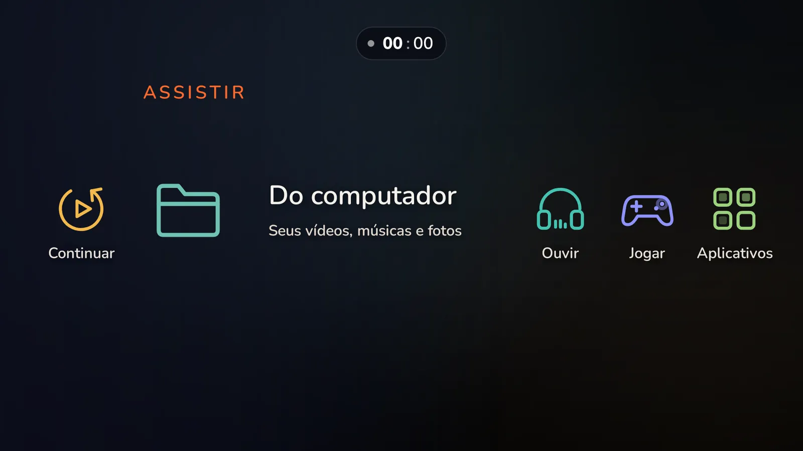
Do computador
Vídeos, músicas e fotos do Plex, Jellyfin, Emby, pastas do PC ou do NAS (SMB, WebDAV, FTP, SFTP, NFS), OneDrive, Dropbox, Box, Google Drive, UPnP e pendrive.
Um player que toca de tudo
Som Dolby (AC3, E-AC3), DTS e TrueHD, e legendas de Blu-ray, DVD e de anime, sem instalar Kodi nem VLC.
Continua de onde parou
Filmes e episódios voltam no ponto certo. O próximo episódio começa depois de 10 segundos, e depois de 3 seguidos a TV pergunta se você ainda está vendo.
Do computador
Vídeos, músicas e fotos do Plex, Jellyfin, Emby, pastas do PC ou do NAS (SMB, WebDAV, FTP, SFTP, NFS), OneDrive, Dropbox, Box, Google Drive, UPnP e pendrive.
Onde: Os servidores ligados e o pendrive aparecem sozinhos; os outros entram em Adicionar.Um player que toca de tudo
Som Dolby (AC3, E-AC3), DTS e TrueHD, e legendas de Blu-ray, DVD e de anime, sem instalar Kodi nem VLC.
Onde: Aperte ▼ durante o vídeo para áudio, legenda e tamanho da legenda.Continua de onde parou
Filmes e episódios voltam no ponto certo. O próximo episódio começa depois de 10 segundos, e depois de 3 seguidos a TV pergunta se você ainda está vendo.
Onde: Funciona sozinho.Pular abertura
Quando a abertura da série é conhecida, aparece “Pular abertura · OK”. Você também pode marcar a abertura uma vez e a TV lembra.
Onde: Vem ligado de fábrica.Áudio e legenda preferidos
Original com legenda ou dublado, escolhido uma vez e lembrado por título. Legendas da internet quando o arquivo não tem.
Onde: TV e filmes › Áudio e legendas.Filme sem tremer
A TV troca para 24 Hz enquanto o filme toca, e os movimentos de câmera ficam lisos.
Onde: Liga sozinho com o filme; a tela pisca preta por um segundo.Ver e ouvir melhor
Legenda com fundo preto ou amarela, “Voz mais clara” que realça a fala e “Volume parecido” que segura o filme alto e sobe o baixo.
Onde: No menu ▼ do player.Legenda automáticaUltra
Quando não existe legenda no seu idioma, a TV traduz a que existe.
Onde: Escolha no menu de legenda do player.Fichas completasUltra
Pôster, nota, elenco, trailer, classificação e a coleção do filme numa ficha bonita, com letra grande. Com “Quem é esse ator?”: foto, personagem e outros trabalhos.
Onde: OK num filme ou série.Suas listas do Trakt e do SimklPro
O que você quer ver e o que já viu, sincronizado com a sua conta e com os outros aparelhos.
Onde: Entre pelo QR em TV e filmes › Serviços.Uma busca para tudo
Procura filmes, séries, rádios e apps de uma vez, e continua a mesma busca no YouTube, na Netflix ou no Prime Video.
Onde: Na barra do topo, ou pela voz.Duas legendas ao mesmo tempo
Por exemplo, português embaixo e a original em cima, para aprender ou para ver junto.
Onde: Menu ▼ do player › Legenda.Diálogo mais alto
Quando o som 5.1 vira estéreo, a fala fica na frente e as explosões não abafam a voz.
Onde: Menu ▼ do player.Sem spoiler e segundo idioma
O resumo do episódio que você não viu fica escondido. Sem áudio ou legenda no seu idioma, entra o segundo que você escolheu.
Onde: TV e filmes › Áudio e legendas.
Ouvir
Rádio e podcast com o mesmo cuidado que vídeo.
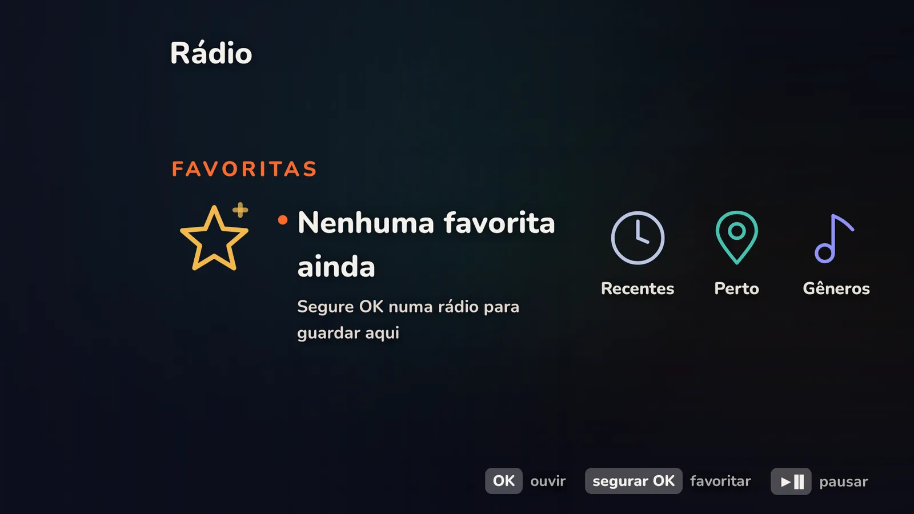
Rádio do mundo inteiro
Milhares de rádios abertas, por nome, país ou gênero, com as suas favoritas e as últimas que tocaram.
Podcasts
Assine pelo nome, ouça na TV e continue o episódio de onde parou.
Descobrir podcasts
Busca em todo o catálogo aberto de podcasts e a lista do que está em alta no seu país.
Rádio do mundo inteiro
Milhares de rádios abertas, por nome, país ou gênero, com as suas favoritas e as últimas que tocaram.
Onde: Ouvir › Rádio.Podcasts
Assine pelo nome, ouça na TV e continue o episódio de onde parou.
Onde: Ouvir › Podcasts.Descobrir podcastsPro
Busca em todo o catálogo aberto de podcasts e a lista do que está em alta no seu país.
Onde: Ouvir › Podcasts › Buscar.Player em tela cheia
Capa grande, capítulos, velocidade e um timer para dormir que pausa no fim do episódio.
Onde: Ouvir › Tocando agora › Abrir o player.O som no seu fonePro
O som do filme vai para o fone do celular, sincronizado, para ver de noite sem acordar ninguém.
Onde: Menu ▼ do player › Som no fone.
Jogar
Todos os jogos num lugar só, prontos para o controle.
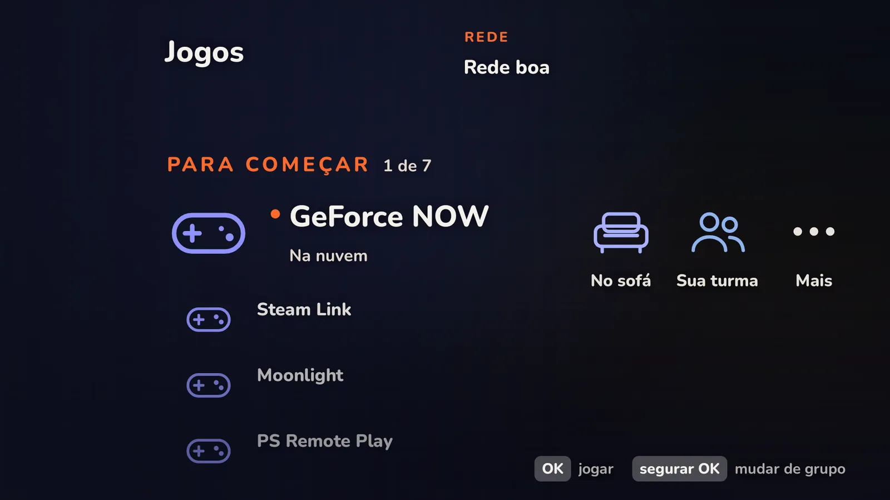
Todos os jogos num lugar
GeForce NOW, Steam Link, Moonlight, PS Remote Play, RetroArch e os jogos da TV saem da linha de apps e moram no Jogar, separados em Na nuvem, Do PC, Retrô e Da TV.
Jogar no PC do quarto
A TV acorda o computador pela rede, espera ele responder e abre o Moonlight ou o Steam Link. Acordar o PC pela rede também funciona fora do Jogar, num atalho da tela inicial.
Testar a rede
Diz se a sua internet aguenta jogo na nuvem, e avisa antes de abrir um jogo com a rede fraca.
Todos os jogos num lugar
GeForce NOW, Steam Link, Moonlight, PS Remote Play, RetroArch e os jogos da TV saem da linha de apps e moram no Jogar, separados em Na nuvem, Do PC, Retrô e Da TV.
Onde: Segure OK num jogo para mudar de grupo.Jogar no PC do quarto
A TV acorda o computador pela rede, espera ele responder e abre o Moonlight ou o Steam Link. Acordar o PC pela rede também funciona fora do Jogar, num atalho da tela inicial.
Onde: Guarde o computador uma vez no painel.Testar a rede
Diz se a sua internet aguenta jogo na nuvem, e avisa antes de abrir um jogo com a rede fraca.
Onde: Jogar › Testar a rede.Controle de videogame
Pareie o controle sem procurar menu, veja os ligados no alto da tela e, se quiser, faça o controle ligado abrir o Jogar.
Onde: Jogar › Parear controle.Modo jogo
Com um jogo aberto, o protetor, o filtro noturno e os avisos esperam a partida acabar.
Onde: Liga sozinho.A turma do Discord
Veja quem do seu servidor do Discord está online e em qual jogo, e chame a turma direto da TV.
Onde: Ligue o widget do servidor e cole o número.
Aplicativos
Seus apps na ordem que faz sentido.
Os que você mais usa na frente
Aplicativos mostra os 8 apps que você mais abre, e “Todos os apps” traz o resto numa grade.
Do seu jeito
Mova, junte em pilhas ou esconda qualquer app. Apps de fábrica que você não usa somem da frente.
Botões Netflix e YouTube livres
Os botões de app do controle abrem o app que você quiser. Aperte para abrir, segure 3 segundos para trocar.
Os que você mais usa na frente
Aplicativos mostra os 8 apps que você mais abre, e “Todos os apps” traz o resto numa grade.
Onde: Aplicativos, na cruz.Do seu jeito
Mova, junte em pilhas ou esconda qualquer app. Apps de fábrica que você não usa somem da frente.
Onde: Segure OK num app.Botões Netflix e YouTube livres
Os botões de app do controle abrem o app que você quiser. Aperte para abrir, segure 3 segundos para trocar.
Onde: Funciona com o controle original.
A casa
Despertador, timers, automações e a casa conectada.
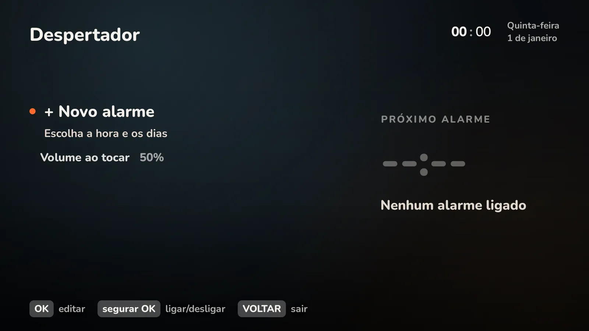
Despertador que liga a TV
Na hora, a TV liga sozinha, o volume sobe aos poucos e tem soneca. Cada alarme tem nome, dias, som e volume, até um app ou a última rádio.
Timers e ampulheta
Até 3 timers com nome e aviso na tela, e um cronômetro.
Desligar suave
O timer para dormir escurece a tela e baixa o volume nos 5 minutos finais, para ninguém acordar com o corte.
Despertador que liga a TV
Na hora, a TV liga sozinha, o volume sobe aos poucos e tem soneca. Cada alarme tem nome, dias, som e volume, até um app ou a última rádio.
Onde: Segure VOLTAR › Alarme.Timers e ampulheta
Até 3 timers com nome e aviso na tela, e um cronômetro.
Onde: “Ok Google, abrir Avisar em 10 minutos”.Desligar suave
O timer para dormir escurece a tela e baixa o volume nos 5 minutos finais, para ninguém acordar com o corte.
Onde: Bloco Timer do painel rápido.Desliga se ninguém está vendo
Depois do tempo que você escolher sem tocar no controle, a TV pergunta em letra grande se você ainda está vendo e desliga.
Onde: Tela e energia › Desligar sem uso.Receitas prontas
Dormir, Novela e Jogo ajustam a TV de uma vez (som, tela e avisos). Um OK aplica, outro desfaz.
Onde: Painel rápido.AutomaçõesPro
Na hora certa, ao apertar um botão ou quando algo acontece (o filme pausou, todos saíram, vai chover): a TV abre um app, roda uma cena ou desliga.
Onde: Casa e automações › Automações.Home Assistant na TVPro
Luzes, tomadas, ventiladores, cortinas, ar-condicionado e cenas, direto do sofá. Fala com o seu servidor na sua rede, sem nuvem no meio.
Onde: Segure HOME.Quem está na portaPro
Quando a campainha toca, a foto da câmera aparece por cima do que você está vendo.
Onde: Com Home Assistant.Desliga quando todos saem
Com um roteador UniFi, a TV percebe que os celulares da casa saíram e vai dormir.
Onde: Tela e energia › Mais opções.Atalhos de voz
“Ok Google, abrir Boletim do Tempo” lê a previsão. Também abrem Filmes, Minha casa, Mural, timers e o desligar.
Onde: Use o botão do microfone.Liga junto com a TV
Ligou a TV pelo controle dela? O aparelho acorda junto, sem tela preta. E o volume da LG pela rede; quando o aparelho dorme sozinho, a LG desliga junto.
Onde: Liga sozinho.Não perturbe
Nas horas que você escolher, avisos e sons esperam.
Onde: Casa e automações.“Só se” e feriados
Automação que só roda em dia útil, com gente em casa ou com chuva, sabendo os feriados do seu país.
Onde: Casa e automações › Automações.
Clima e protetor
O tempo certo e um protetor de tela que vale a pena deixar ligado.
O tempo de agora, medido
A temperatura vem do boletim do aeroporto mais perto, e o ícone de dia e noite segue o nascer e o pôr do sol de onde a TV está.
Chuva em três modelos
A chance de chuva é a mediana de três modelos do tempo (ECMWF, ICON e GFS), que erra menos que um só.
Previsão em tela cheia
As próximas 24 horas, gráfico de chuva, 9 dias, qualidade do ar, o sol e a lua.
O tempo de agora, medido
A temperatura vem do boletim do aeroporto mais perto, e o ícone de dia e noite segue o nascer e o pôr do sol de onde a TV está.
Onde: No topo da tela inicial.Chuva em três modelosUltra
A chance de chuva é a mediana de três modelos do tempo (ECMWF, ICON e GFS), que erra menos que um só.
Onde: Aparece sozinha na previsão.Previsão em tela cheia
As próximas 24 horas, gráfico de chuva, 9 dias, qualidade do ar, o sol e a lua.
Onde: OK no clima.Aviso de chuva
Um aviso por cima do app quando a chuva está para começar. Hora de recolher a roupa.
Onde: Tela inicial › Clima.Um protetor que vale a pena
Saudação, hora grande, data, clima e cartões com notificações, próximo alarme e recados. No tema Galeria, o quadro do dia se move devagar para não marcar a tela.
Onde: Tela e energia › Protetor de tela.Suas fotos no protetor
Mande fotos pelo celular ou escolha uma pasta da rede. Elas ficam numa pasta só da TV.
Onde: Um QR abre o painel já na página certa.Bom dia
Ao parar o despertador: saudação, hora, previsão e a agenda de hoje, e a TV pode ler em voz alta.
Onde: “Ok Google, abrir Bom dia”.Agenda do Google
Os compromissos de hoje e os aniversários na TV, de uma conta ou de todas juntas.
Onde: OK na data, no topo.Filtro noturno
À noite a tela fica mais quente e menos forte para os olhos.
Onde: Tela e energia › Mais opções.Retrospectiva da semana
Domingo à noite, um cartão com o tempo de tela por app, a internet usada e as quedas da rede.
Onde: Tela e energia › Mais opções.Aviso de calor ou frio forte
O mesmo aviso da chuva, por cima de qualquer tela, quando vem calor ou frio forte.
Onde: Tela inicial › Clima.O céu da noite
Planetas, a Estação Espacial e eclipses, calculados na própria TV, sem internet.
Onde: Protetor de tela.A Terra vista do espaço
Fotos tiradas pelos astronautas e o tema Céu de verdade, com o mapa da sua região.
Onde: Tela e energia › Protetor de tela.Curiosidade e hora por extenso
Uma curiosidade por vez no protetor e o relógio escrito por extenso: “nove e cinquenta e um”.
Onde: Protetor de tela.Sua TV no ano
Em dezembro, uma retrospectiva do ano: o que mais se viu, ouviu e jogou na sua TV. Fica só na TV.
Onde: Aparece em dezembro.
Família
Um perfil para cada um, cuidado com as crianças e visita bem-vinda.
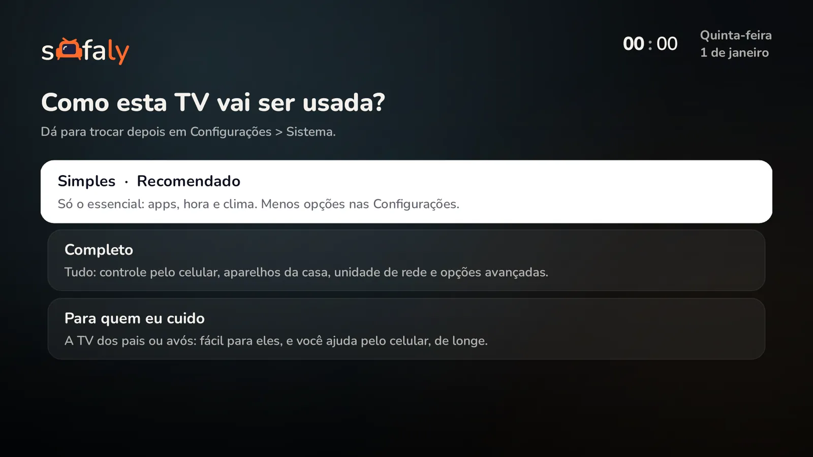
Um perfil para cada um
Cada conta Google da TV tem os seus favoritos, o que continuar e a ordem dos apps.
Perfil de criança
Marque um perfil como de criança: o modo infantil e a hora de dormir ligam sozinhos, e sair pede o PIN dos pais.
Hora de dormir
No horário que você escolhe, só os apps liberados abrem e o volume tem teto.
Um perfil para cada um
Cada conta Google da TV tem os seus favoritos, o que continuar e a ordem dos apps.
Onde: Segure VOLTAR › Perfis.Perfil de criança
Marque um perfil como de criança: o modo infantil e a hora de dormir ligam sozinhos, e sair pede o PIN dos pais.
Onde: Painel rápido › Perfis.Hora de dormir
No horário que você escolhe, só os apps liberados abrem e o volume tem teto.
Onde: Família › Mais opções.Tempo de tela por dia
Um limite diário de TV para quem você escolher.
Onde: Família › Mais opções.Modo visita
Esconde o seu perfil, a agenda e os apps que você escolher enquanto tem gente em casa.
Onde: Bloco Visita do painel rápido.Wi-Fi da visita
Digite a senha uma vez; a visita lê um QR na TV e já entra.
Onde: Família › Wi-Fi das visitas.Mural da família
Lista de compras, recados fixos e aniversários do dia, no painel rápido e no protetor de tela.
Onde: Edite pelo celular; OK risca um item.Recado de longePro
Quem mora longe manda recado e foto para a TV da casa, de qualquer lugar.
Onde: Convite por link.Recado em vídeoPro
Um vídeo curto da família aparece na TV com o nome de quem mandou.
Onde: Pelo painel no celular.Classificação indicativa
No modo infantil, filmes e séries pela idade certa, além das categorias.
Onde: Família.Modo anfitrião
Para casa de aluguel: o hóspede usa a TV, e o que é seu fica guardado e volta no fim da estadia.
Onde: Família › Mais opções.Cuidar de longe
Quem mora sozinho pede ajuda segurando uma tecla, e o celular de quem cuida recebe o aviso. Só liga com o sim de quem mora, dado na própria TV.
Onde: Família › Cuidar de longe.
Celular e computador
A TV conversa com os aparelhos da casa.
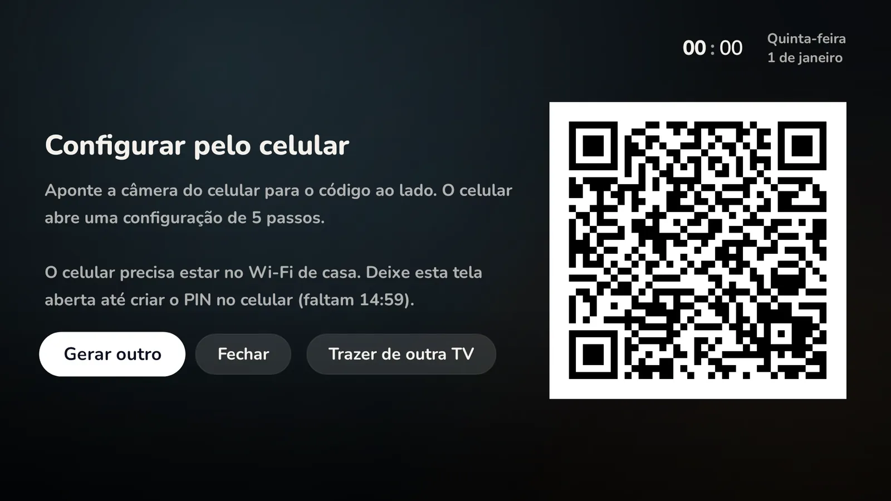
Painel no celular e no computador
Controle remoto, digitar com acento, ver a tela da TV, fotos do protetor, mural e backups, pelo navegador de qualquer aparelho da casa.
Pedir à TV
Escreva ou dite “abre o YouTube”, “avisa em 7 minutos”, “desliga em 30 minutos” e a TV faz.
Compartilhar do celular
Instalado como app, o painel aparece em Compartilhar: um vídeo do YouTube abre na TV, um link abre na TV e um texto vira recado.
Painel no celular e no computador
Controle remoto, digitar com acento, ver a tela da TV, fotos do protetor, mural e backups, pelo navegador de qualquer aparelho da casa.
Onde: Acesso remoto › Entrar pelo celular (QR).Pedir à TVPro
Escreva ou dite “abre o YouTube”, “avisa em 7 minutos”, “desliga em 30 minutos” e a TV faz.
Onde: No painel do celular.Compartilhar do celularPro
Instalado como app, o painel aparece em Compartilhar: um vídeo do YouTube abre na TV, um link abre na TV e um texto vira recado.
Onde: Compartilhar › Sofaly.A TV como unidade de redePro
Copie arquivos para a TV arrastando: no Windows ela aparece em Este Computador como um celular; no Mac, no Linux e no celular, por WebDAV seguro.
Onde: Acesso remoto › Mostrar como unidade de rede.Atalho no WindowsPro
A TV aparece na Rede do Explorador com um atalho que abre o painel, mesmo se o IP mudar.
Onde: Liga junto com o painel.Continuar em outra TVPro
Parou na sala? Mande para o quarto: a outra TV mostra “Continuar de onde parou?” e abre no mesmo ponto.
Onde: Menu do player › Enviar para outra TV.Assistir juntoUltra
Duas casas assistem a mesma coisa ao mesmo tempo: pausou aqui, pausou lá, com reações no canto da tela.
Onde: Convite entre as TVs da família.Várias casasUltra
Cuide da TV da sua casa e da casa dos seus pais pelo mesmo celular.
Onde: Pelo app do celular.Fale com a TV pelo Claude
Converse com a sua TV pelo Claude: ela responde o que está passando, abre apps e ajusta coisas. Um QR na tela, sem chave e sem senha.
Onde: Acesso remoto › Claude pela internet.Teclado do celular
Um campo de texto abriu na TV? O teclado aparece no seu celular.
Onde: Liga sozinho com o painel.Avisos no celular
Despertador, campainha e recados chegam no celular, sem servidor no meio.
Onde: Painel › Avisos no celular.
Se cuida sozinha
Backup, manutenção e diagnóstico sem você lembrar.
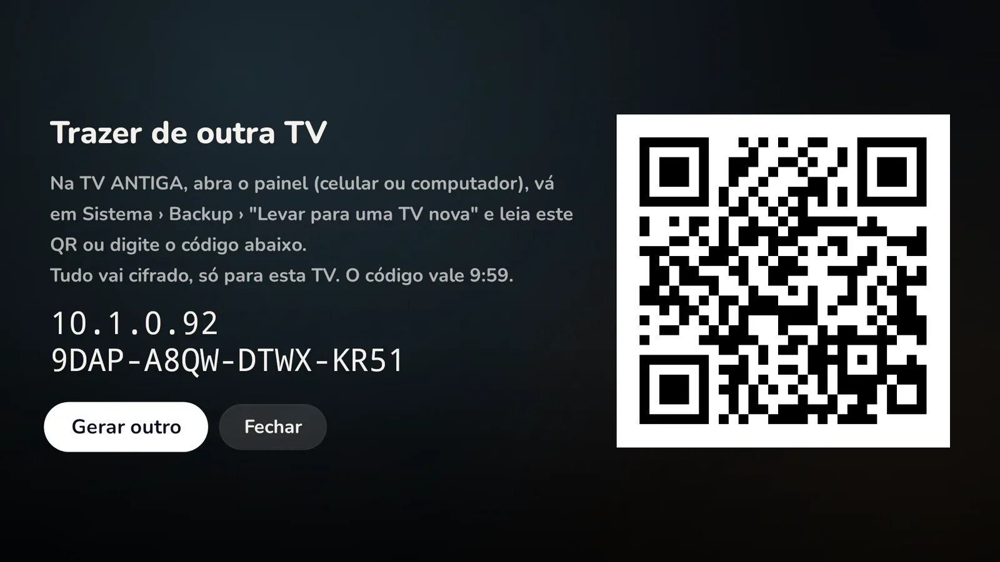
TV nova em 2 minutos
Comprou outra TV? Leia um QR e tudo passa para ela, cifrado.
Backup trancado, toda noite
Com a TV parada, um backup completo trancado com a sua senha. Ficam os 7 últimos, e toda noite a TV confere se ele restauraria.
Cópia na nuvem
As cópias vão também para o seu Google Drive, OneDrive, Dropbox, Box, NAS ou pendrive. Trancadas: nem a nuvem lê.
TV nova em 2 minutos
Comprou outra TV? Leia um QR e tudo passa para ela, cifrado.
Onde: Sistema › Backup › Levar para uma TV nova.Backup trancado, toda noite
Com a TV parada, um backup completo trancado com a sua senha. Ficam os 7 últimos, e toda noite a TV confere se ele restauraria.
Onde: Sistema › Backup automático.Cópia na nuvemPro
As cópias vão também para o seu Google Drive, OneDrive, Dropbox, Box, NAS ou pendrive. Trancadas: nem a nuvem lê.
Onde: Sistema › Backup automático.Manutenção de madrugada
Limpa o que sobra, conserta permissões e reagenda alarmes enquanto você dorme.
Onde: Liga sozinha.Diagnóstico da TV
Internet, DNS e por que um app parou, tudo de uma vez e em frases que dá para entender.
Onde: “Ok Google, abrir Diagnóstico da TV”.Teste de velocidade
Mede a sua internet num toque e mostra sinal do Wi-Fi, latência e velocidade em palavras simples.
Onde: Configurações › Avançado › Rede.Como esta TV está indo
A TV mede os próprios números (tempo para abrir, quedas, alarmes no horário) e mostra numa tela só. Nada sai da sua casa.
Onde: Sistema › Como esta TV está indo.Modo seguro
Se uma versão nova der problema logo depois de instalar, a TV volta para um modo seguro e mostra o caminho.
Onde: Aparece só quando precisa.O que mudou
Cada versão explica o que mudou e traz um roteiro curto para conferir com o controle.
Onde: Sistema › O que mudou.Relatar um problema
Conte o que aconteceu com o controle ou pelo celular; a TV junta o que precisa, sem nada pessoal.
Onde: Sistema › Relatar problema.Wi-Fi que volta sozinho
Se o Wi-Fi não volta depois de uma queda, a TV reconecta sozinha.
Onde: Liga sozinho.Sem internet, sem susto
A tela inicial diz numa linha o que continua funcionando enquanto a internet não volta.
Onde: Aparece só quando precisa.Limpeza de apps de fábrica
Tira da frente os apps que vieram com a TV e você não usa, com desfazer, e mostra o antes e depois medido.
Onde: Sistema › Limpeza.
Para todo mundo
Feita para quem enxerga, ouve ou anda com o controle de jeitos diferentes.
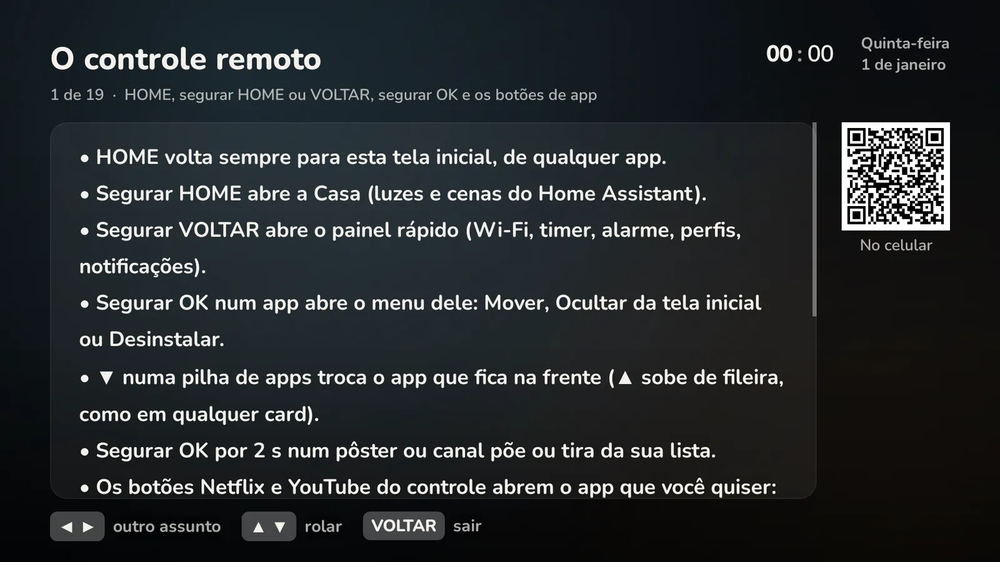
15 línguas
Português, inglês, espanhol, francês, alemão, italiano, russo, polonês, turco, japonês, chinês, coreano, hindi, indonésio e árabe, com telas da direita para a esquerda. Segue o idioma da TV.
Tamanho do texto
Normal, Grande ou Maior, em todas as telas, testado para não cortar nem sobrepor texto.
Modo simples
Cartões grandes, menos coisas na tela e o nome do app falado em voz alta. Para quem acha o controle difícil.
15 línguas
Português, inglês, espanhol, francês, alemão, italiano, russo, polonês, turco, japonês, chinês, coreano, hindi, indonésio e árabe, com telas da direita para a esquerda. Segue o idioma da TV.
Onde: Muda sozinha com a TV.Tamanho do texto
Normal, Grande ou Maior, em todas as telas, testado para não cortar nem sobrepor texto.
Onde: Tela inicial › Tamanho do texto.Modo simples
Cartões grandes, menos coisas na tela e o nome do app falado em voz alta. Para quem acha o controle difícil.
Onde: Tela inicial › Mais opções.Ler em voz alta
A TV fala o que está em foco, com som de navegação para saber onde está.
Onde: Tela inicial › Mais opções.Alto contraste
Texto com contraste de 7:1 e todas as telas lidas pelo leitor de tela do Android.
Onde: Segue a acessibilidade da TV.
Privacidade
Sem propaganda, sem rastreio, com PIN no que importa.
Nenhuma propaganda
Nem no plano grátis, nem um destaque patrocinado. A tela é sua.
Nada de rastreio
Sem conta, sem análise de uso e sem relatório de erro saindo sem você mandar.
PIN no que importa
O que muda a TV pede PIN, e ações que apagam algo pedem de novo. Errou demais? A espera cresce a cada tentativa.
Nenhuma propaganda
Nem no plano grátis, nem um destaque patrocinado. A tela é sua.
Onde: Sempre.Nada de rastreio
Sem conta, sem análise de uso e sem relatório de erro saindo sem você mandar.
Onde: Sempre.PIN no que importa
O que muda a TV pede PIN, e ações que apagam algo pedem de novo. Errou demais? A espera cresce a cada tentativa.
Onde: Acesso remoto › PIN.DNS privado
Escolha um DNS seguro (DNS sobre TLS); se ele não responder, a TV volta para o anterior sozinha.
Onde: Avançado › Rede.Internet por app
Quanto cada app usou de internet e com quem ele falou, guardado na TV por 7 dias.
Onde: Avançado › Rede.PIN para mexer na tela inicial
Ninguém bagunça a sua tela: mover, esconder ou trocar pede o PIN.
Onde: Tela inicial › Mais opções.
Seu app na tela inicial de quem assiste.
Um plugin da Sofaly é o seu próprio app de Android TV. Ele manda um cartão curto e a Sofaly desenha na tela inicial, com letra grande e no estilo da casa.
- Delivery12 min
- Ônibus 426 min
- Academia19h
Por que fazer um plugin
Na frente, não na gaveta
O seu cartão fica na tela inicial, onde a família olha toda vez que liga a TV, e não perdido numa lista de apps.
Sem SDK, sem custo
Um ContentProvider e uma linha de dados. Nenhuma biblioteca nossa para instalar, nenhuma taxa.
Seu app, seu negócio
Publique na Play como quiser, grátis ou pago. A Sofaly só desenha o cartão; o app e os clientes são seus.
O que você pode criar além dos nossos
- Seu deliveryPedido saiu, chega em 12 min.
- Seu ônibusLinha 42 passa em 6 min.
- Sua academiaAula de hoje às 19h.
- Seu condomínioÁgua desligada amanhã, das 9h às 12h.
- Sua lojaOferta do dia: 20% no café.
- Seu clubeTreino remarcado para sábado.
Dois passos
- Declare um provider com a ação da Sofaly
- Responda com uma linha: título, valor, detalhe e cor
Modelo pronto Dois apps de exemplo para compilar hoje: uma contagem para uma data que a pessoa escolhe na TV e a fase da lua de hoje. Sem internet, sem conta. Licença MIT No Attribution: copie, troque o pacote e publique.
Regras que protegem quem assiste
- Você nunca desenha na tela inicial: manda texto e cor, a Sofaly desenha.
- A Sofaly nunca manda a você nada sobre os apps, as contas ou o que a pessoa assiste.
- Plugins são do plano Pro, e a pessoa escolhe quais aparecem.
Já na TV: fundos de plugin, pacotes de ícones e a vitrine de plugins na própria TV.
PlanosComece de graça. Cresça quando quiser.
O Básico já tem a tela inicial completa, o player, o Ouvir, o Jogar, o despertador e o protetor. O Pro e o Ultra somam o celular, a casa e a família.
Os preços saem quando o app chegar à Google Play.
DúvidasPerguntas de sofá
Funciona na minha TV?
Preciso de computador para instalar?
Os meus apps continuam?
Tem propaganda?
Vem com canais ou filmes?
E se eu quiser voltar para a tela do Google?
Sua TV, simples de novo.
Instale, aperte HOME e a casa inteira entende.
No app Downloader da TV, digite o código 6566820
Ou baixe o APK em sofaly.tv/download